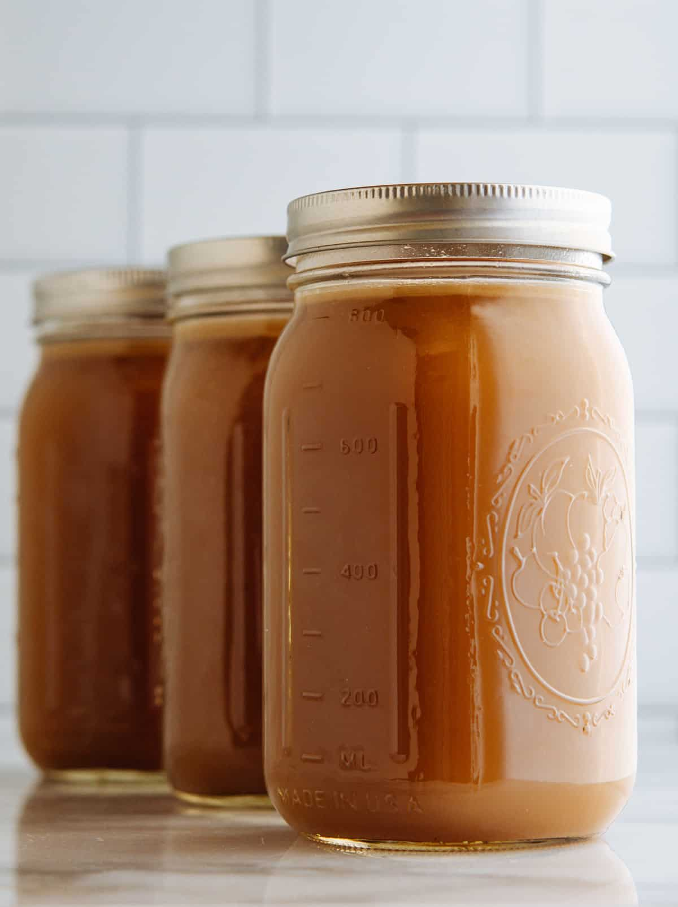

Shoyu Ramen Broth

Ingredients
- 2 cups water
- ¼ ounce dried kombu(7g)
- ¼ ounce dried bonito flakes or 5g(Heather Improvement)
- 2 cups pork broth
- 2 cups chicken broth
- 6 tablespoons soy sauce
- 1 tablespoon unseasoned rice vinegar
- 1 tablespoon mirin
Instructions
- In a medium saucepan, combine water and kombu; bring to simmer over medium heat.
- Remove from heat and stir in bonito flakes; let stand 5 minutes.
- Using a fine mesh strainer, strain out and discard solids (or reserve for a second use).
- Return liquid (dashi) to saucepan and add remaining ingredients (pork broth, chicken broth, soy sauce, rice vinegar and mirin). Bring to simmer.
- Serve immediately or cool and refrigerate for up to 1 week or freeze for up to 1 month.
Pork Bone Broth

Ingredients
- 4 pounds pork bones
- 1 large onion quartered
- 3 large carrots cut into 1-inch pieces
- 3 ribs celery cut into 1-inch pieces
- 1 head garlic cut in half crosswise
- 2 tablespoons black peppercorns ~40 peppercorns
- 3 tablespoons apple cider vinegar
Instructions
- Preheat oven to 400°F.
- Line a rimmed baking sheet with parchment paper. Arrange bones, onion, carrots, celery and garlic in a single layer; roast for 40 minutes.
- Transfer roasted bones and vegetables to slow cooker. Add peppercorns, vinegar and 12-16 cups cold water (depending on the size of your slow cooker). Cover and cook on low for 17 hours (or up to 24 hours).
- Let cool 30 minutes or more then strain out and discard large solids. Strain again through a fine sieve lined with cheesecloth (optional) into a large bowl or measuring pitcher.
- Transfer broth to lidded containers (such as lidded glass quart jars). Refrigerate overnight then skim fat from the top of the cold broth.
- Refrigerate for up to 3 days or freeze for up to 6 months (be sure to leave room at the top of your container to make room for the liquid to expand as it freezes).